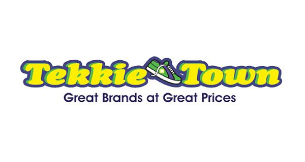
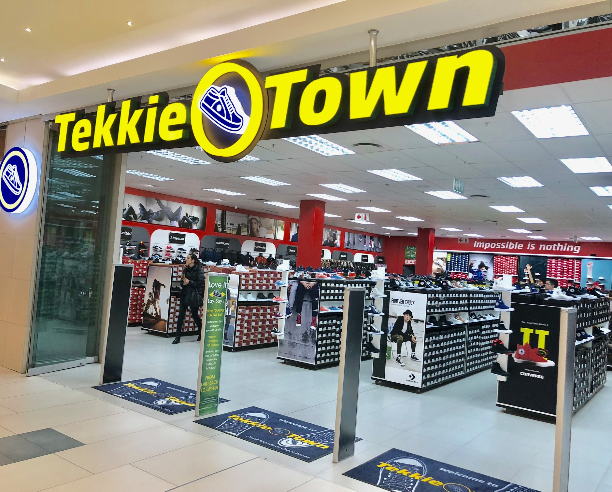
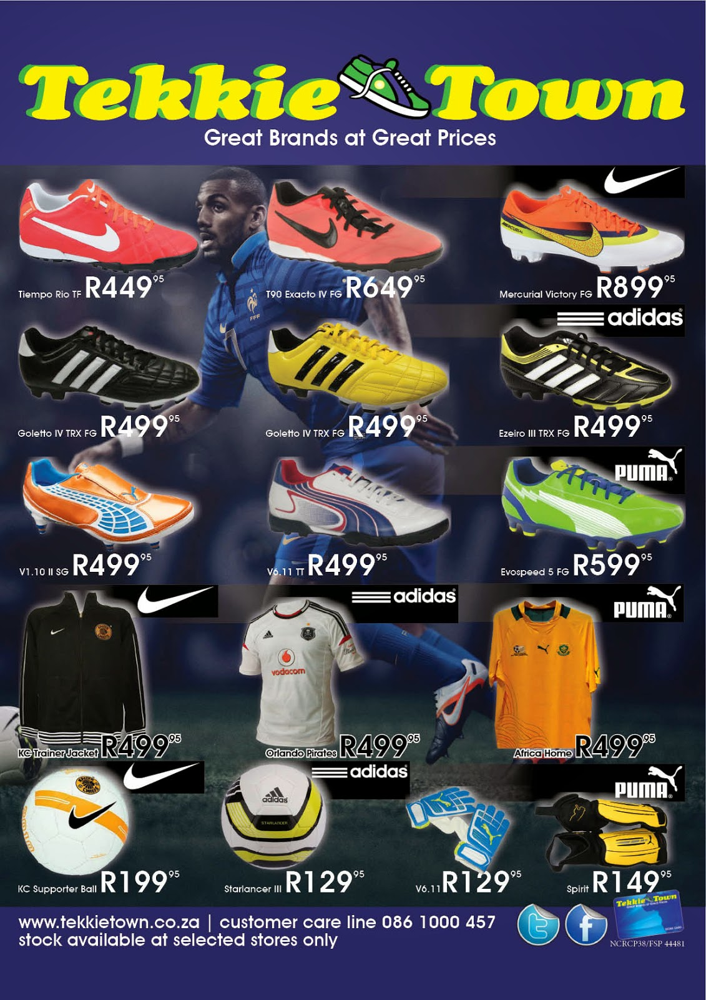
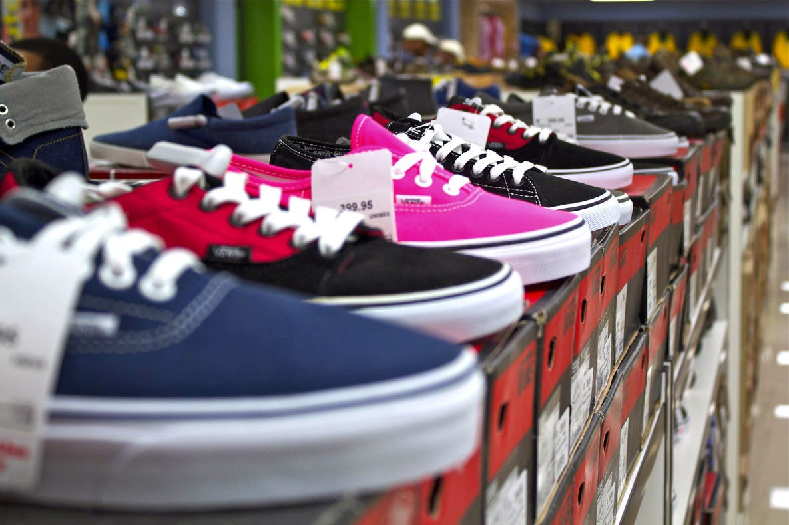
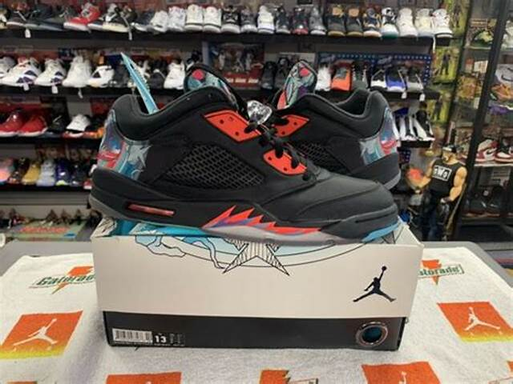

Tekkie Town, founded in June 2001, is a leading sport and lifestyle shoe chain. With over 250 stores countrywide, we cater for the entire family's needs, all ages, genders and any foot size-big or small. Tekkie Town is the answer to quality leisure, school, fashion or sports footwear. They stock the widest range of branded footwear and accessories, like Adidas, Cat, Hi-Tec, Merrell, New Balance, Nike, Puma, Reebok and much more. Tekkie Town found a niche in the South African sports and lifestyle footwear market ten years ago due to the lack of service, attention to customers needs and the unchecked inflation of product prices in the market place. Tekkie Town was also brave enough to identify and open stores in rural South Africa, living close to their purpose of bringing branded footwear to all South Africans at the best possible prices. Tekkie Town promise to continue with exceptional customer service while bringing you the widest range of best quality footwear at the best possible prices. Tekkie Town - Great Brands at Great Prices. crunchbase.com
   